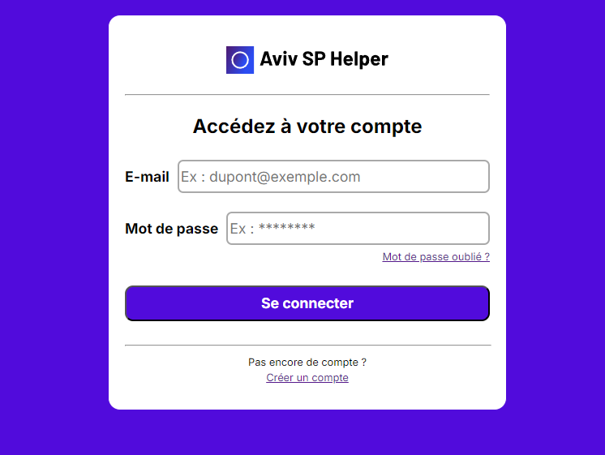
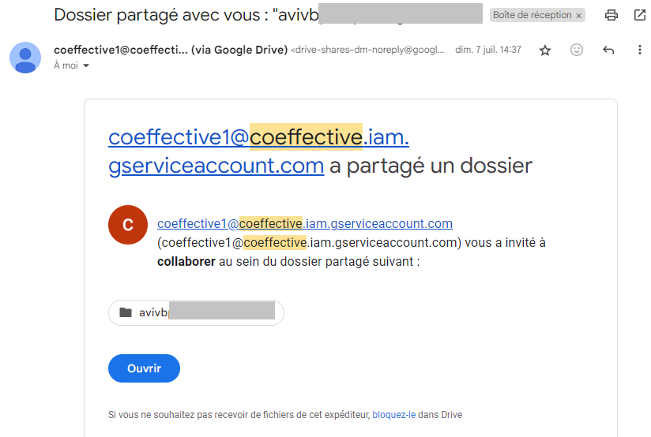
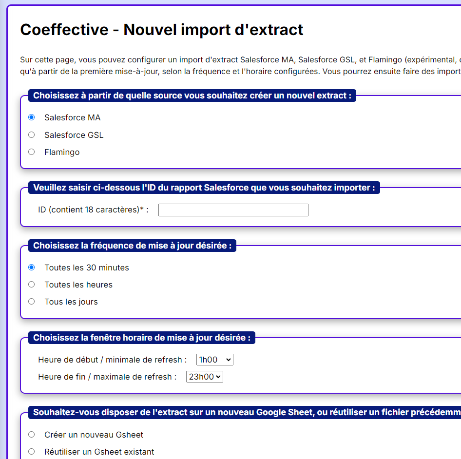
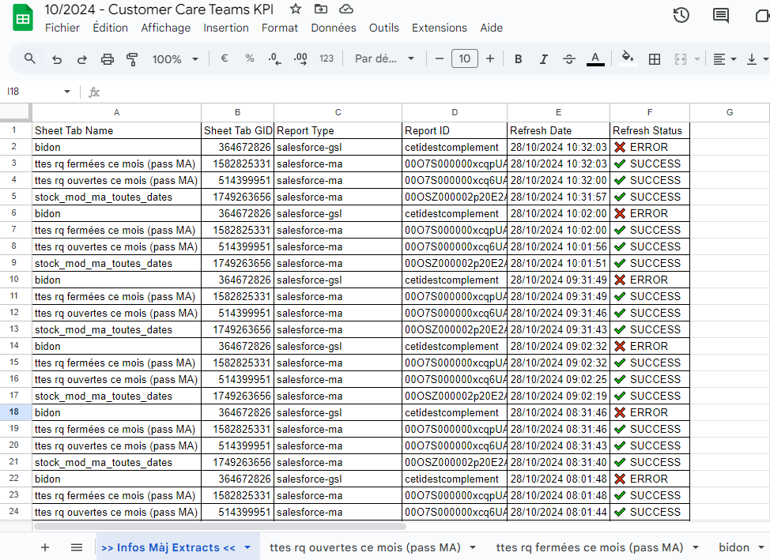
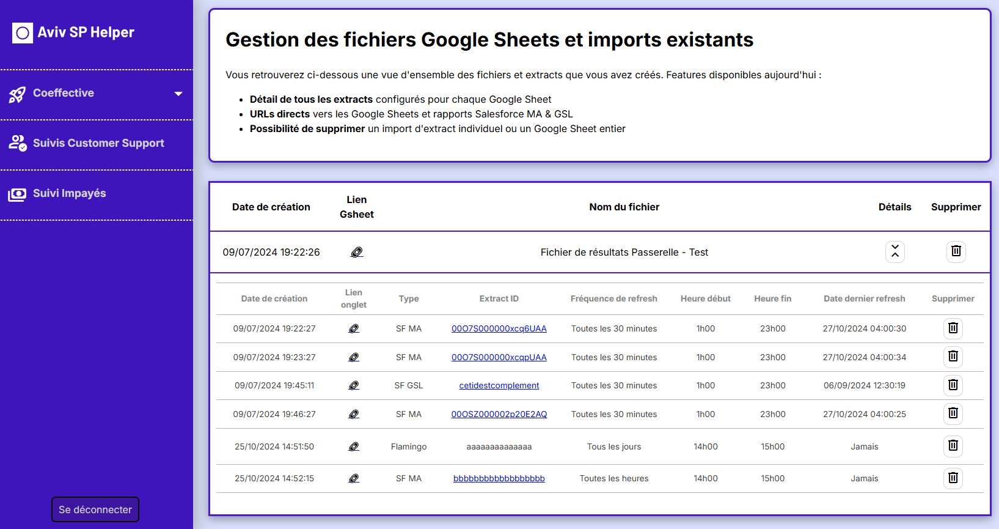
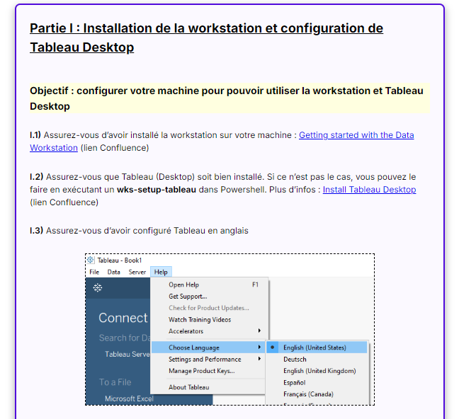

Coeffective simplifies the automation of updating Google Sheets files that rely on extracts from AVIV CRMs (Salesforce) and AVIV databases (Amazon S3). I developed this solution as a full-stack web application with an intuitive interface for the Business Analysts team I was part of at AVIV Group.
I built this project entirely from scratch, beginning with the npx create-next-app@latest command. As it was a personal project, I handled everything from establishing the core logic and design to developing both the front-end and back-end components.
User Authentication: Each user has their own personal space within the app
Google Drive Integration: Upon accessing Coeffective for the first time, a dedicated Google Drive folder is created and shared with the user.
Extract Scheduling: Users can schedule data imports from one of two Salesforce instances (“MA” or “GSL”) or from Amazon S3 (“Flamingo”). They can choose to create new Google Sheet files or update existing ones with incoming data.
Automated Updates: Scheduled extracts are automatically refreshed in Google Sheets based on the user’s chosen frequency and time window.
Dashboard Overview: Users have a centralized view of Google Sheets and scheduled imports created through the app, with options to view details or delete them as needed.
Setup Tutorial: A detailed tutorial is provided to guide users through setting up their machine, a prerequisite for creating “Flamingo” extract imports.
At AVIV Group, the majority of commercial reporting relies on Google Sheets. In my analytics role, I was responsible for creating and maintaining many of these files, using data from two different Salesforce instances. To meet the needs of my internal clients, frequent refreshes were essential, often every hour or more.
After experimenting with Google service accounts and Salesforce access tokens, I developed a personal Python script, scheduled to run every 30 minutes via GitHub Actions. This solution worked well for me for quite a while. Meanwhile, my analyst teammates, facing similar challenges, had to use a paid tool with limitations, which most notably restricted each user to use only a single Salesforce instance at a time.
At one point, we also needed an automated solution to import data from our company database, which was different from Salesforce. Having worked with Tableau API in the past, I had already explored some ways this could be done programmatically in our context. This time, however, no obvious existing paid solution could help the rest of my team achieve this goal.
This is what inspired me to expand my initial script into a full project. My desire was to empower my team by allowing them to configure automatic data imports independently, allowing flexible access to any of our three data sources. I envisioned an intuitive interface that would be tailor-made to our specific needs, with a polished professional design and reliable performance.
I love React, so I wanted to use a React framework for this project. I chose Next.js mainly for its performance benefits with Server-Side Rendering. Also, using a React framework with modern features like Suspense would allow me to have the tools I need to create high-quality user experiences, no matter the complexity of the application if I were to develop more features. The main website is hosted on Vercel.
For the database, I opted for Supabase which offers PostgreSQL tables under the hood, and because of its built-in API for handling authentication. Supabase allowed me to start the project very quickly with its generous free tier, which I believe will be more than enough for the lifetime of this project.
To automate extract updates in Google Sheets, I used Python due to its obvious strengths in handling tabular data with the pandas library. The script runs on a Hetzner server and interacts with Supabase to know which data is needed for each user, makes requests to data sources using access tokens, and updates Google Sheets with the gspread library.
I encountered quite a lot of challenges throughout this project. Here’s a non-exhaustive list of the tasks I tackled, each bringing its own set of hurdles that I ultimately overcame:
I could spend days describing the lessons that I learned while working on this project, as I covered a wide range of topics working from one part of the application to the next. Working on this project involved continuous learning, especially regarding Next.js’ App Router paradigm, User Experience, API integration, database design, and Ubuntu server setup. I also developed a strong focus on code structure and organization, which allowed me to navigate my own project effectively even months after writing the initial code.
Though there was an initial learning curve, successfully completing a project using Next.js has boosted my confidence in my ability to other frameworks like Vue or Angular.
Looking back now, there are two main areas where I could enhance this project:
Using TypeScript Instead of JavaScript: When I started, I was comfortable with TypeScript basics, but I chose JavaScript to get started quickly and because I felt more confident carrying out a full project in JavaScript. Since I’m the sole contributor, TypeScript’s team collaboration advantages were less essential. Still, as the project grew, I occasionally found myself wishing for TypeScript’s type feedback in my IDE, especially when working with objects and complex functions, as it would have saved time and reduced second-guessing.
Automated Testing: Although I tested every element of my application thoroughly, I did so manually—thinking through each possible user interaction, runtime error, and database response. As I refactored code and retested components manually repeatedly, the importance of automated testing became clear. While my priority was to start coding quickly, I can see how automated testing would have saved time and streamlined development in the long run.